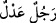

Âlemde zâhir olan, görünen Hak’tan gayrı değildir
Bütün âlem O’nun nûruyla âşikârdır
Ne güzel bir câhil, parlayan güneşi
Mum ışığıyla çöllerde arar
Tibyân’da şöyle rivâyet edilir: “Allah’ın kudret ve hikmetinin güzelliklerinin
göstergesi olan semâlar ve yer, O’nun kudret ve hikmetlerinin varlığına delildir.”
Her şeyde O’na bir delil var
Onun bir olduğunu gösterir
Bütün eşyânın varlığı O’nun kudretinin delilidir
Sultânu’l-müfessirîn İbn Abbas (r.a.), bu âyeti şöyle tefsir etmiştir: “Yâni Allah
göklerin ve yerin ehline yol gösterendir. Onlar O’nun hidâyeti ile yollarını bulurlar ve
O’nun hidâyetiyle sapıklık bataklığından kurtulurlar.” Yâni Allah’ın hidâyeti ve yol
göstermesi ile kendi varlıklarını tanıdılar ve O’nun irşâdı ile din ve dünya için gerekli
işleri bildiler.
Gök ve yer ehli hidâyet nûruna Allah Teâlâ’nın tevfîki ile ulaştıkları için O kendisini
Arapların âdeti üzere “Nûr” diye isimlendirmiştir. Çünkü Araplar bazen başka bir
şeyden hâsıl olan bir şeyi onun ismiyle isimlendirirler. Meselâ yağmura “bulut” derler.
Çünkü yağmur bulutta oluşur ve ondan çıkar. İşte îman ve hidâyet nûru Allah’ın tevfîki
ile hâsıl olduğundan Allah bu isimle isimlendirilmiştir. Birbirinden meydana geldikleri
için nûra hidâyet, hidâyete de nur denilebilir. Allah Teâlâ: “Onlar yıldızlarla da
yollarını doğrulturlar.” (en-Nahl, 16/16) buyurmuştur. İnsanlar yıldızların ışığı ile
yollarını doğrultunca yıldız yol gösteren, onlar da yıldızın ışığıyla yolunu bulanlar
sayılmışlardır. Aynı şekilde kendileri vâsıtasıyla hidâyete erişildiği için Kur’an’a da
Tevrât’a da “nûr” adı verilmiştir. Nitekim el-Es’iletü’l-mufhıme’de böyle geçmektedir.
Buna göre matlûba ulaşmaya sebep oluşu bakımından hidâyet nura benzetilmiş ve
istiâre yoluyla ona nûr adı verilmiştir. Sonra da hidâyet mânâsındaki nûr, Allah
Teâlâ’ya ad olmuştur. Tıpkı “ (âdil adam mânâsına) adâlet adam” sözünde
olduğu gibi.
Şeyh Üftâde (k.s.) der ki: “Keşf yoluyla gönlüme ârız oldu ki: “Allah göklerin ve
yerin nûrudur.” âyetindeki “nûr” kelimesi ilim mânâsındadır. İlim de burada “ (âdil adam mânâsına) adâlet adam” sözünde olduğu gibi âlim/bilen anlamında
kullanılmıştır. Nûr ile ilim arasındaki münâsebet şudur: Hisse dayalı şeyler nûr/ışık ile
ortaya çıktığı gibi akıl ile idrâk edilen şeyler, hatta bütün işler ilimle ortaya çıkar.